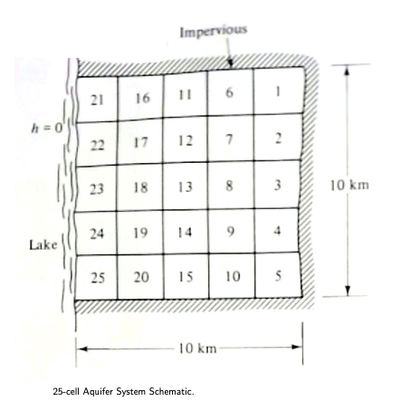

Groundwater Water Allocation by Simulation-Optimization¶
This chapter demonstrates pumping allocation based on total demands for consump- tion and availability of water for the certain aquifer, and an example of a ground- water simulation-optimization activity. The optimization model is created using linear programming for aquifer management to minimize the cost of the pumping and conveyance to a customer, to meet a water demand requirement, with constraints designed to prevent contaminated lake water from encroaching into the aquifer. The chapter is presented as a case study for a simple example to illustrate the organizational and computational steps involved.
Example (Bear 1979 pp.505-509)¶
shows a plan view of the aquifer system being examined. The 10 km 10 km square aquifer is divided into 25 cells of (2km 2km each). Well fields in each cell are assumed to behave as if all pumping occurs at the cell centroid, and the resulting heads are averaged throughout the cell. The aquifer has impervious boundaries on three sides and a lake is on the forth side. The lake water quality is poor, so keeping the water level of the aquifer above a certain level should be taken into consideration to prevent water encroaching from the lake into the aquifer. Therefore, water level at the distance of 1 km and 3 km from the lake should be maintained at +0.64 m and +0.95 m respectively, where the lake level is the datum (+0.0 m).
Precipitation with a rate of \(N = 100 mm/yr\) is replenishing the aquifer uniformly over the entire area. The entire replenishment drains through the aquifer into the lake. The aquifer is a homogeneous-isotropic aquifer and has a transmissivity of \(T = 1000 m^2/day\).

A single consumer (city) exists in Cell 18, with a demand of 7.0\(Mm^3/yr\). The cost to pump water and deliver to Cell 18 is ($1.00 + $0.50/km))/\(Mm^3\) The distance from a pumping cell to cell 18 expressed in cartesian coordinates is \(D_i−>18 = \sqrt{(x_i − x_{18})^2 + (y_i − y_{18})^2}\) where the x and y values are the coordinates to the cell centers in kilometers (using the lower right corner is the coordinate system origin).
For example:
The cost to pump \(1~Mm^3\) of water from Cell 18 is $1.00,
The cost to pump \(1~Mm^3\) water from Cell 3 and transport it to Cell 18 is $1.00 + $3.00 = $4.00. The first monetary unit is the pumping cost and the remainder is the transport cost to deliver water to Cell 18.
The management objective is to supply the demand at Cell 18 at minimum cost, while maintaining the minimal water levels in Cells 16 – 25 to protect the water quality of the aquifer (and prevent lake water from entering the aquifer).
To construct the management model we can first specify the decision variables which are \(P_i\) the pumping rate in \(M m^3\) in the i − th cell. Then we need to specify the cost function
Next is the influence on the aquifer heads (or drawdown) at location i caused by unit pumping at location j. These will form the various constraint equations. There are 25 cells in the aquifer that can have pumping, and 10 cells with restrictive constraints (the drawdown requirements).
The pumping decisions affect the aquifer head, so a tool to estimate the response to the decision variables is created using a computer model of the aquifer. In the example, the system is to be operated at steady conditions and the aquifer is a homogeneous-isotropic confined aquifer, so the effect of one unit of pumping at a location can be determined external to the optimization process. First, one needs to develop a groundwater hydraulic model of the system.
Step 1 - Build a Useable Groundwater Flow Model¶
Using concepts in Cleveland, T. G. (2023) Groundwater Models in notes to accompany CE 4363 a useable groundwater model for this example is listed below:
def sse(matrix1,matrix2):
sse=0.0
nr=len(matrix1) # get row count
nc=len(matrix1[0]) # get column count
for ir in range(nr):
for jc in range(nc):
sse=sse+(matrix1[ir][jc]-matrix2[ir][jc])**2
return(sse)
def update(matrix1,matrix2):
nr=len(matrix1) # get row count
nc=len(matrix1[0]) # get column count
##print(nr,nc)
for ir in range(nr):
for jc in range(nc):
##print(ir,jc)
matrix2[ir][jc]=matrix1[ir][jc]
return(matrix2)
def writearray(matrix):
nr=len(matrix) # get row count
nc=len(matrix[0]) # get column count
import numpy as np
new_list = list(np.around(np.array(matrix), 4))
for ir in range(nr):
print(ir,new_list[ir][:])
return()
verbose = False
echoinput = False
infile = "base-case.txt"
localfile = open(infile,"r") # connect and read file for 2D gw model
deltax = float(localfile.readline())
deltay = float(localfile.readline())
deltaz = float(localfile.readline())
nrows = int(localfile.readline())
ncols = int(localfile.readline())
tolerance = float(localfile.readline())
maxiter = int(localfile.readline())
distancex = [] # empty list
distancex.append([float(n) for n in localfile.readline().strip().split()])
distancey = [] # empty list
distancey.append([float(n) for n in localfile.readline().strip().split()])
boundarytop = [] #empty list
boundarytop.append([float(n) for n in localfile.readline().strip().split()])
boundarybottom = [] #empty list
boundarybottom.append([int(n) for n in localfile.readline().strip().split()])
boundaryleft = [] #empty list
boundaryleft.append([int(n) for n in localfile.readline().strip().split()])
boundaryright = [] #empty list
boundaryright.append([int(n) for n in localfile.readline().strip().split()])
head =[] # empty list
for irow in range(nrows):
head.append([float(n) for n in localfile.readline().strip().split()])
#writearray(head)
hydcondx = [] # empty list
for irow in range(nrows):
hydcondx.append([float(n) for n in localfile.readline().strip().split()])
#writearray(hydcondx)
hydcondy = [] # empty list
for irow in range(nrows):
hydcondy.append([float(n) for n in localfile.readline().strip().split()])
#writearray(hydcondy)
pumping = [] # empty list
for irow in range(nrows):
pumping.append([float(n) for n in localfile.readline().strip().split()])
#writearray(pumping)
localfile.close() # Disconnect the file
##
if echoinput:
print("--Echo Inputs--")
print("--head--")
writearray(head)
print("--Kx--")
writearray(hydcondx)
print("--Ky--")
writearray(hydcondy)
print("pumping-recharge")
writearray(pumping)
print()
##
amat = [[0 for j in range(ncols)] for i in range(nrows)]
bmat = [[0 for j in range(ncols)] for i in range(nrows)]
cmat = [[0 for j in range(ncols)] for i in range(nrows)]
dmat = [[0 for j in range(ncols)] for i in range(nrows)]
qrat = [[0 for j in range(ncols)] for i in range(nrows)]
## Transmissivity Arrays
for irow in range(1,nrows-1):
for jcol in range(1,ncols-1):
amat[irow][jcol] = (( hydcondx[irow-1][jcol ]+ hydcondx[irow ][jcol ]) * deltaz ) /(2.0*deltax**2)
bmat[irow][jcol] = (( hydcondx[irow ][jcol ]+ hydcondx[irow+1][jcol ]) * deltaz ) /(2.0*deltax**2)
cmat[irow][jcol] = (( hydcondy[irow ][jcol-1]+ hydcondy[irow ][jcol ]) * deltaz ) /(2.0*deltay**2)
dmat[irow][jcol] = (( hydcondy[irow ][jcol ]+ hydcondy[irow ][jcol+1]) * deltaz ) /(2.0*deltay**2)
## Net Pumping Array
for irow in range(nrows):
for jcol in range(ncols):
qrat[irow][jcol] = (pumping[irow][jcol])/(365.0*deltax*deltay)
## Headold array
headold = [[0 for jc in range(ncols)] for ir in range(nrows)] #force a new matrix
headold = update(head,headold) # update
if echoinput:
print("--before iterations--\n head")
writearray(head)
print("--headold--")
writearray(headold)
print("--qrat--")
writearray(qrat)
print("--amat--")
writearray(amat)
print("--bmat--")
writearray(bmat)
print("--cmat--")
writearray(cmat)
print("--dmat--")
writearray(dmat)
print("----")
print()
tolflag = False
for iter in range(maxiter):
if verbose:
print("begin iteration\n head")
writearray(head)
print("--headold--")
writearray(headold)
print("--qrat--")
writearray(qrat)
print("----")
# Boundary Conditions
# first and last row special == no flow boundaries
for jcol in range(ncols):
if boundarytop[0][jcol] == 0: # no - flow at top
head [0][jcol ] = head[1][jcol ]
if boundarybottom[0][ jcol ] == 0: # no - flow at bottom
head [nrows-1][jcol ] = head[nrows-2][jcol ]
# first and last column special == no flow boundaries
for irow in range(nrows):
if boundaryleft[0][ irow ] == 0:
head[irow][0] = head [irow][1] # no - flow at left
if boundaryright[0][ irow ] == 0:
head [irow][ncols-1] = head[ irow ][ncols-2] # no - flow at right
# interior updates
for irow in range(1,nrows-1):
for jcol in range(1,ncols-1):
head[irow][jcol]=( -qrat[irow][jcol] \
+amat[irow][jcol]*head[irow-1][jcol ] \
+bmat[irow][jcol]*head[irow+1][jcol ] \
+cmat[irow][jcol]*head[irow ][jcol-1] \
+dmat[irow][jcol]*head[irow ][jcol+1] )\
/(amat[ irow][jcol ]+ bmat[ irow][jcol ]+ cmat[ irow][jcol ]+ dmat[ irow][jcol ])
if verbose:
print("end iteration\n head")
writearray(head)
print("--headold--")
writearray(headold)
print("--qrat--")
writearray(qrat)
print("----")
# test for stopping iterations
## print("end iteration")
## writearray(head)
## print("----")
## writearray(headold)
percentdiff = sse(head,headold)
if percentdiff <= tolerance:
print("Exit iterations in velocity potential because tolerance met ")
print("Iterations =" , iter+1 ) ;
tolflag = True
break
# update
headold = update(head,headold)
# next iteration
print("End Calculations")
print("Iterations = ",iter+1)
print("Closure Error = ",round(percentdiff,3))
# special messaging to report min head to adjust pump rates
import numpy
b = numpy.array(head)
print("Minimum Head",round(b.min(),3))
print("Input File ",infile)
#
print("Head Map")
print("----")
writearray(head)
print("----")
Exit iterations in velocity potential because tolerance met
Iterations = 438
End Calculations
Iterations = 438
Closure Error = 0.0
Minimum Head 0.0
Input File base-case.txt
Head Map
----
0 [ 0. 2.7956 7.1792 10.4669 12.6587 13.7545 13.7545]
1 [ 0. 2.7956 7.1792 10.4669 12.6587 13.7545 13.7545]
2 [ 0. 2.7956 7.1792 10.4669 12.6587 13.7545 13.7545]
3 [ 0. 2.7956 7.1792 10.4669 12.6587 13.7545 13.7545]
4 [ 0. 2.7956 7.1792 10.4669 12.6587 13.7545 13.7545]
5 [ 0. 2.7956 7.1792 10.4669 12.6587 13.7545 13.7545]
6 [ 0. 2.7956 7.1792 10.4669 12.6587 13.7545 13.7545]
----
The base-case.txt input file is shown below (annotations are not part of the actual file):
2000
2000
1
7
7
1e-29
900
1 2 3 4 5 6 7
1 2 3 4 5 6 7
1 0 0 0 0 0 0
1 0 0 0 0 0 0
1 1 1 1 1 1 1
0 0 0 0 0 0 0
0 2.795639 7.1792 10.46687 12.65865 13.75454 13.75454 <= "equilibrium head distribution"
0 2.795639 7.1792 10.46687 12.65865 13.75454 13.75454
0 2.795639 7.1792 10.46687 12.65865 13.75454 13.75454
0 2.795639 7.1792 10.46687 12.65865 13.75454 13.75454
0 2.795639 7.1792 10.46687 12.65865 13.75454 13.75454
0 2.795639 7.1792 10.46687 12.65865 13.75454 13.75454
0 2.795639 7.1792 10.46687 12.65865 13.75454 13.75454
2920.0 1000.0 1000.0 1000.0 1000.0 1000.0 1000.0 <= "transmissivity x array"
2920.0 1000.0 1000.0 1000.0 1000.0 1000.0 1000.0
2920.0 1000.0 1000.0 1000.0 1000.0 1000.0 1000.0
2920.0 1000.0 1000.0 1000.0 1000.0 1000.0 1000.0
2920.0 1000.0 1000.0 1000.0 1000.0 1000.0 1000.0
2920.0 1000.0 1000.0 1000.0 1000.0 1000.0 1000.0
2920.0 1000.0 1000.0 1000.0 1000.0 1000.0 1000.0
2920.0 1000.0 1000.0 1000.0 1000.0 1000.0 1000.0 <= "transmissivity y array"
2920.0 1000.0 1000.0 1000.0 1000.0 1000.0 1000.0
2920.0 1000.0 1000.0 1000.0 1000.0 1000.0 1000.0
2920.0 1000.0 1000.0 1000.0 1000.0 1000.0 1000.0
2920.0 1000.0 1000.0 1000.0 1000.0 1000.0 1000.0
2920.0 1000.0 1000.0 1000.0 1000.0 1000.0 1000.0
2920.0 1000.0 1000.0 1000.0 1000.0 1000.0 1000.0
-4E05 -4E05 -4E05 -4E05 -4E05 -4E05 -4E05 <= "pumping - recharge array"
-4E05 -4E05 -4E05 -4E05 -4E05 -4E05 -4E05
-4E05 -4E05 -4E05 -4E05 -4E05 -4E05 -4E05
-4E05 -4E05 -4E05 -4E05 -4E05 -4E05 -4E05
-4E05 -4E05 -4E05 -4E05 -4E05 -4E05 -4E05
-4E05 -4E05 -4E05 -4E05 -4E05 -4E05 -4E05
-4E05 -4E05 -4E05 -4E05 -4E05 -4E05 -4E05
Next modify the flow model to run as a python script in the operating system shell with a file name using the .py extension. The modifications are:
Take input from stdio using redirection from a file with the name of the input file:
verbose = False
echoinput = False
infile = input()
print(infile)
localfile = open(infile,"r") # connect and read file for 2D gw model
Write output to an output file based on the input file name
#writearray(head)
#print("----")
outfile = infile.strip(".txt") + '.out'
localfile = open(outfile,"w") # connect and read file for 2D gw model
localfile.writelines(outfile+'\n')
for row in range(len(head)):
localfile.write(" ".join(map(str,head[row]))+"\n")
localfile.close()
Now the program can be run as a shell command, thus its control can be automated.
# a typical shell command
! python3 2D-SteadyConfinedJacobi.py < input0.txt
base-case.txt
The contents of input0.txt are:
base-case.txt
The output file is base-case.out and it contains:
base-case.out
0.0 2.7956388034665838 7.179200447302184 10.466871680178881 12.658652502096675 13.754542913055573 13.754542913055573
0.0 2.7956388034665838 7.179200447302184 10.466871680178881 12.658652502096675 13.754542913055573 13.754542913055573
0.0 2.7956388034665838 7.179200447302184 10.466871680178881 12.658652502096675 13.754542913055573 13.754542913055573
0.0 2.7956388034665838 7.179200447302184 10.466871680178881 12.658652502096675 13.754542913055573 13.754542913055573
0.0 2.7956388034665838 7.179200447302184 10.466871680178881 12.658652502096675 13.754542913055573 13.754542913055573
0.0 2.7956388034665838 7.179200447302184 10.466871680178881 12.658652502096675 13.754542913055573 13.754542913055573
0.0 2.7956388034665838 7.179200447302184 10.466871680178881 12.658652502096675 13.754542913055573 13.754542913055573
Step 2 - Create collection of input files to sequentially run to build up influence matrix¶
The influence matrix (or technological function) (Bear (1979) pp. 496, Eqn. 12-10 (and 12-11)) is constructed by running the groundwater flow model with one well at a time active at some unit rate (herein 1 \(Mm^3/yr\)), the outputs of these runs (25 in total) are saved then processed further below. For large problems this process needs to be automated, one way is to adapt the model to run unattended as below, supply a control file that contains the name of the input file to use, and another control file (OS specific) to batch submit each run and collect the output.
The example herein assumes Linux and uses bash shell scripts How to Write and Run Linux Shell Scripts. Windoze equivalents exist (see Batch Scripts on Windows - Wikipedia,How to Write Windows Batch Scripts.
We have already demonstrated that the program can be run from a shell command; now just glue together 25 to run automatically.
So we create 25 files that are nearly identical to the above input file, but with a pump operating in one of the 25 cells, name them pump1.txt … pump25.txt
The relevant part of pump25.txt is shown below
2920.0 1000.0 1000.0 1000.0 1000.0 1000.0 1000.0
2920.0 1000.0 1000.0 1000.0 1000.0 1000.0 1000.0
2920.0 1000.0 1000.0 1000.0 1000.0 1000.0 1000.0
-4E05 -4E05 -4E05 -4E05 -4E05 -4E05 -4E05
-4E05 -4E05 -4E05 -4E05 -4E05 -4E05 -4E05
-4E05 -4E05 -4E05 -4E05 -4E05 -4E05 -4E05
-4E05 -4E05 -4E05 -4E05 -4E05 -4E05 -4E05
-4E05 -4E05 -4E05 -4E05 -4E05 -4E05 -4E05
-4E05 6E05 -4E05 -4E05 -4E05 -4E05 -4E05 <<< The pump is in the cell adjacent to the lake
-4E05 -4E05 -4E05 -4E05 -4E05 -4E05 -4E05
Step 3 - Create a control script to run the collection of inputs¶
Next a control file to convey the input file name to the program, in this case input25.txt
pump25.txt
Finally a shell script to run 26 instances for the model, and collect the input run_cases.sc
#!/bin/bash
# semi-colon means wait until process is completed
python3 2D-SteadyConfinedJacobi.py < input0.txt > base-case.out;
python3 2D-SteadyConfinedJacobi.py < input1.txt > pump1.out;
python3 2D-SteadyConfinedJacobi.py < input2.txt > pump2.out;
python3 2D-SteadyConfinedJacobi.py < input3.txt > pump3.out;
python3 2D-SteadyConfinedJacobi.py < input4.txt > pump4.out;
python3 2D-SteadyConfinedJacobi.py < input5.txt > pump5.out;
python3 2D-SteadyConfinedJacobi.py < input6.txt > pump6.out;
python3 2D-SteadyConfinedJacobi.py < input7.txt > pump7.out;
python3 2D-SteadyConfinedJacobi.py < input8.txt > pump8.out;
python3 2D-SteadyConfinedJacobi.py < input9.txt > pump9.out;
python3 2D-SteadyConfinedJacobi.py < input10.txt > pump10.out;
python3 2D-SteadyConfinedJacobi.py < input11.txt > pump11.out;
python3 2D-SteadyConfinedJacobi.py < input12.txt > pump12.out;
python3 2D-SteadyConfinedJacobi.py < input13.txt > pump13.out;
python3 2D-SteadyConfinedJacobi.py < input14.txt > pump14.out;
python3 2D-SteadyConfinedJacobi.py < input15.txt > pump15.out;
python3 2D-SteadyConfinedJacobi.py < input16.txt > pump16.out;
python3 2D-SteadyConfinedJacobi.py < input17.txt > pump17.out;
python3 2D-SteadyConfinedJacobi.py < input18.txt > pump18.out;
python3 2D-SteadyConfinedJacobi.py < input19.txt > pump19.out;
python3 2D-SteadyConfinedJacobi.py < input20.txt > pump20.out;
python3 2D-SteadyConfinedJacobi.py < input21.txt > pump21.out;
python3 2D-SteadyConfinedJacobi.py < input22.txt > pump22.out;
python3 2D-SteadyConfinedJacobi.py < input23.txt > pump23.out;
python3 2D-SteadyConfinedJacobi.py < input24.txt > pump24.out;
python3 2D-SteadyConfinedJacobi.py < input25.txt > pump25.out;
cat base-case.out pump1.out pump2.out pump3.out pump4.out pump5.out pump6.out pump7.out pump8.out pump9.out pump10.out pump11.out pump12.out pump13.out pump14.out pump15.out pump16.out pump17.out pump18.out pump19.out pump20.out pump21.out pump22.out pump23.out pump24.out pump25.out > influence-matrices-out1.txt;
# now kill all the intermediate files
rm -rf base-case.out pump1.out pump2.out pump3.out pump4.out pump5.out pump6.out pump7.out pump8.out pump9.out pump10.out pump11.out pump12.out pump13.out pump14.out pump15.out pump16.out pump17.out pump18.out pump19.out pump20.out pump21.out pump22.out pump23.out pump24.out pump25.out
The shell script runs the base case and 25 pumping cases then collects output into a single file called influence-matrices-out1.txt
# run the shell script -- be patient, it takes awhile
! ./run_cases.sc
Now we have built the influence-matrices-out1.txt file, that contains the equilibrium heads for each pump. We can examine the file using a system command cat
Step 4 - Read the head matrices, convert to influence table¶
First we will read the heads we computed above, then determine drawdowns from any unit pumping. then create an influence table structure which will become constraint sets in the LP model.
The influence table structure is:
pump1 |
pump2 |
… |
pump25 |
|
|---|---|---|---|---|
Cell 1 |
ddn1-1 |
ddn1-2 |
… |
ddn1-25 |
Cell 2 |
ddn2-1 |
ddn2-2 |
… |
ddn2-25 |
In this example will have 25 rows, 25 columns - the script is shown below:
# Connect to the head files
# file contains a heading, then an array
infile = "influence-matrices-out1.txt"
localfile = open(infile,"r") # connect and read file for 2D gw model
biglist = []
# read database
for ipump in range(26):
label = localfile.readline()
for ir in range(7):
biglist.append([float(n) for n in localfile.readline().strip().split()])
# create an empty response matrix
response = [[[0 for ir in range(7)] for jc in range(7)] for ip in range(26)]
for ip in range(26):
for ir in range(7):
for jc in range(7):
response[ip][ir][jc]=biglist[ir][jc] - biglist[ip*7+ir][jc]
# response is now the unit DDN matrix
ddn = [[0 for icell in range(25)] for ip in range(25)] # the LP influence array
# map to locate cellID and grid coordinate
cellloc = [[1,5],[2,5],[3,5],[4,5],[5,5],\
[1,4],[2,4],[3,4],[4,4],[5,4],\
[1,3],[2,3],[3,3],[4,3],[5,3],\
[1,2],[2,2],[3,2],[4,2],[5,2],\
[1,1],[2,1],[3,1],[4,1],[5,1] ]
# now write matrix into LP influence form
for icell in range(25): # 25 cell model
for ip in range(25): # 25 possible pumping locations
ddn[icell][ip] = response[ip+1][cellloc[icell][0]][cellloc[icell][1]]
# ddn is the cell-by cell drawdown for each pump - this is what we will send to the LP solver
# write it to a file
outfile = 'influence-table' + '.out'
localfile = open(outfile,"w") # connect and read file for 2D gw model
for row in range(25):
localfile.write(" ".join(map(str,ddn[row]))+"\n")
localfile.close()
verbatim = False
if verbatim:
print(ddn) # check if object was built
Step 5 - Formally build the LP¶
Using guidance from Mirko Stojiljković (2020). Hands-On Linear Programming: Optimization With Python we construct a LP to send to the SciPy linear program tool
Build the Cost Vector
import math
verbose = False #Set to True for lots-o-output
# build the cost model
# build the cost coefficient vector
xdist = [1,3,5,7,9] # position of grid centers in horozontal direction
ydist = [1,3,5,7,9] # position of grid centers in vertical direction
x0 = 5 # cell center Cell 18 - horizontal
y0 = 3 # cell center Cell 18 - vertical
cost = [] # empty list to store the cost coefficients
# cell location map
cellloc = [[1,5],[2,5],[3,5],[4,5],[5,5],\
[1,4],[2,4],[3,4],[4,4],[5,4],\
[1,3],[2,3],[3,3],[4,3],[5,3],\
[1,2],[2,2],[3,2],[4,2],[5,2],\
[1,1],[2,1],[3,1],[4,1],[5,1] ]
for icell in range(25):
part1 = xdist[cellloc[icell][0] - 1]-x0
part2 = ydist[cellloc[icell][1] - 1]-y0
distance = math.sqrt((part1)**2 + (part2)**2)
cost.append( 1.0 + 0.5 * distance)
# cost now contains cost coefficients for the LP, decisions are the pump rates, this will be passed to the objective function
Build the constraints
# Read the influence table
infile='influence-table.out'
localfile=open(infile,"r")
tableau = [] # 25 rows in the influence matrix, goes to top of the LP structure
for ir in range(16):
tableau.append([-1*float(n) for n in localfile.readline().strip().split()])
for ir in range(16,25):
tableau.append([float(n) for n in localfile.readline().strip().split()])
demand = [1.0 for jc in range(25)] # a row of ones!
tableau.append(demand)
# force zeros pumping in cells 21-25
row27 = [0.0 for jc in range(25)]
row28 = [0.0 for jc in range(25)]
row29 = [0.0 for jc in range(25)]
row30 = [0.0 for jc in range(25)]
row31 = [0.0 for jc in range(25)]
row27[20]=1.0
row28[21]=1.0
row29[22]=1.0
row30[23]=1.0
row31[24]=1.0
# append these to the tableau
tableau.append(row27)
tableau.append(row28)
tableau.append(row29)
tableau.append(row30)
tableau.append(row31)
# print the tableau
if verbose:
for i in range(len(tableau)):
print(tableau[i][:])
# the tableau contains the LP constraint matrix, now build the corresponding RHS
Build RHS Vector
# Build the constraint RHS vector (SciPy uses less-than for inequality)
# drawdown constraints
# demand constraints
# non-negative constraints
rhs_ineq = [0.00,0.00,0.00,0.00,0.00,0.00,0.00,0.00,0.00,0.00,0.00,0.00,0.00,0.00,0.00,6.22,6.22,6.22,6.22,6.22,2.15,2.15,2.15,2.15,2.15] # drawdown constraints
rhs_eq = [7.00,0.00,0.00,0.00,0.00,0.00] # force zero cells 21-25
# now list slice to populate rest
lhs_ineq = tableau[0:25][:] # part of tableau for drawdown and demand
lhs_eq = tableau[25:31][:] # part of tableau for forced zeros
verbose=False
# print the tableau
if verbose:
print('Inequality RHS')
for i in range(len(lhs_ineq)):
print(lhs_ineq[i][:])
print('Equality RHS')
for i in range(len(lhs_eq)):
print(lhs_eq[i][:])
# the pieces are in SciPy structure, now complete the LP
Load the optimizer package
from scipy.optimize import linprog # load the package
Set some options
myoptions=dict({"maxiter":1000,"tol": 1e-9,"autoscale":False})
#myoptions
Upper/lower bound the variables, note the constructor notation
bnd = [(0, float("inf")) for i in range(25)] # set bounds 0-infnty
Now the money shot; run the optimizer
opt = linprog(c=cost, A_ub=lhs_ineq, b_ub=rhs_ineq,
... A_eq=lhs_eq, b_eq=rhs_eq, bounds=bnd,
... method="interior-point",options=myoptions)
if verbose:
opt
Capture Output
# check for solution
if opt.status == 0:
print('Optimal Solution Found')
print('Cost : ',round(opt.fun,2))
sum = 0.0
for i in range(25):
print('Pumpage Cell',i+1,' = ',round(opt.x[i],3))
sum=sum+opt.x[i]
print('Total Pumpage :',round(sum,3))
Optimal Solution Found
Cost : 13.73
Pumpage Cell 1 = 0.0
Pumpage Cell 2 = 0.0
Pumpage Cell 3 = 0.0
Pumpage Cell 4 = 0.0
Pumpage Cell 5 = 0.0
Pumpage Cell 6 = 0.0
Pumpage Cell 7 = 0.0
Pumpage Cell 8 = 0.0
Pumpage Cell 9 = 0.0
Pumpage Cell 10 = 0.0
Pumpage Cell 11 = 0.0
Pumpage Cell 12 = 0.0
Pumpage Cell 13 = 0.0
Pumpage Cell 14 = 0.0
Pumpage Cell 15 = 0.0
Pumpage Cell 16 = 0.912
Pumpage Cell 17 = 1.902
Pumpage Cell 18 = 1.603
Pumpage Cell 19 = 2.163
Pumpage Cell 20 = 0.42
Pumpage Cell 21 = 0.0
Pumpage Cell 22 = 0.0
Pumpage Cell 23 = 0.0
Pumpage Cell 24 = 0.0
Pumpage Cell 25 = 0.0
Total Pumpage : 7.0
Construct an input file to test the solution
# convert solution into input file fragment for a simulation run
recharge = 0.1 #m/yr
pumpage = 1.0e6 #Mm^3/yr
dxdy = 2000*2000
Rin = dxdy*recharge
for i in range(25):
print(round(opt.x[i]*1e6-Rin,3))
Rin
-400000.0
-400000.0
-400000.0
-400000.0
-400000.0
-400000.0
-400000.0
-400000.0
-400000.0
-400000.0
-400000.0
-400000.0
-400000.0
-400000.0
-400000.0
512024.387
1501557.195
1203376.832
1762958.847
20082.739
-400000.0
-400000.0
-400000.0
-400000.0
-400000.0
400000.0
Using the miracle of cut-and-paste, create an input file for the groundwater simulator.
Save in file `pumpOpt.txt
...
...
...
2920.0 1000.0 1000.0 1000.0 1000.0 1000.0 1000.0
-4E05 -4E05 -4E05 -4E05 -4E05 -4E05 -4E05
-4E05 -4E05 512024.387 -4E05 -4E05 -4E05 -4E05
-4E05 -4E05 1501557.195 -4E05 -4E05 -4E05 -4E05
-4E05 -4E05 1203376.832 -4E05 -4E05 -4E05 -4E05
-4E05 -4E05 1762958.847 -4E05 -4E05 -4E05 -4E05
-4E05 -4E05 20082.739 -4E05 -4E05 -4E05 -4E05
-4E05 -4E05 -4E05 -4E05 -4E05 -4E05 -4E05
And run a simulation to check that heads are large enough to satisfy hydraulic constraints.
def sse(matrix1,matrix2):
sse=0.0
nr=len(matrix1) # get row count
nc=len(matrix1[0]) # get column count
for ir in range(nr):
for jc in range(nc):
sse=sse+(matrix1[ir][jc]-matrix2[ir][jc])**2
return(sse)
def update(matrix1,matrix2):
nr=len(matrix1) # get row count
nc=len(matrix1[0]) # get column count
##print(nr,nc)
for ir in range(nr):
for jc in range(nc):
##print(ir,jc)
matrix2[ir][jc]=matrix1[ir][jc]
return(matrix2)
def writearray(matrix):
nr=len(matrix) # get row count
nc=len(matrix[0]) # get column count
import numpy as np
new_list = list(np.around(np.array(matrix), 6))
for ir in range(nr):
print(ir,new_list[ir][:])
return()
verbose = False
echoinput = False
infile = "pumpOpt.txt"
localfile = open(infile,"r") # connect and read file for 2D gw model
deltax = float(localfile.readline())
deltay = float(localfile.readline())
deltaz = float(localfile.readline())
nrows = int(localfile.readline())
ncols = int(localfile.readline())
tolerance = float(localfile.readline())
maxiter = int(localfile.readline())
distancex = [] # empty list
distancex.append([float(n) for n in localfile.readline().strip().split()])
distancey = [] # empty list
distancey.append([float(n) for n in localfile.readline().strip().split()])
boundarytop = [] #empty list
boundarytop.append([float(n) for n in localfile.readline().strip().split()])
boundarybottom = [] #empty list
boundarybottom.append([int(n) for n in localfile.readline().strip().split()])
boundaryleft = [] #empty list
boundaryleft.append([int(n) for n in localfile.readline().strip().split()])
boundaryright = [] #empty list
boundaryright.append([int(n) for n in localfile.readline().strip().split()])
head =[] # empty list
for irow in range(nrows):
head.append([float(n) for n in localfile.readline().strip().split()])
#writearray(head)
hydcondx = [] # empty list
for irow in range(nrows):
hydcondx.append([float(n) for n in localfile.readline().strip().split()])
#writearray(hydcondx)
hydcondy = [] # empty list
for irow in range(nrows):
hydcondy.append([float(n) for n in localfile.readline().strip().split()])
#writearray(hydcondy)
pumping = [] # empty list
for irow in range(nrows):
pumping.append([float(n) for n in localfile.readline().strip().split()])
#writearray(pumping)
localfile.close() # Disconnect the file
##
if echoinput:
print("--Echo Inputs--")
print("--head--")
writearray(head)
print("--Kx--")
writearray(hydcondx)
print("--Ky--")
writearray(hydcondy)
print("pumping-recharge")
writearray(pumping)
print()
##
amat = [[0 for j in range(ncols)] for i in range(nrows)]
bmat = [[0 for j in range(ncols)] for i in range(nrows)]
cmat = [[0 for j in range(ncols)] for i in range(nrows)]
dmat = [[0 for j in range(ncols)] for i in range(nrows)]
qrat = [[0 for j in range(ncols)] for i in range(nrows)]
## Transmissivity Arrays
for irow in range(1,nrows-1):
for jcol in range(1,ncols-1):
amat[irow][jcol] = (( hydcondx[irow-1][jcol ]+ hydcondx[irow ][jcol ]) * deltaz ) /(2.0*deltax**2)
bmat[irow][jcol] = (( hydcondx[irow ][jcol ]+ hydcondx[irow+1][jcol ]) * deltaz ) /(2.0*deltax**2)
cmat[irow][jcol] = (( hydcondy[irow ][jcol-1]+ hydcondy[irow ][jcol ]) * deltaz ) /(2.0*deltay**2)
dmat[irow][jcol] = (( hydcondy[irow ][jcol ]+ hydcondy[irow ][jcol+1]) * deltaz ) /(2.0*deltay**2)
## Net Pumping Array
for irow in range(nrows):
for jcol in range(ncols):
qrat[irow][jcol] = (pumping[irow][jcol])/(deltax*deltay)/365.
## Headold array
headold = [[0 for jc in range(ncols)] for ir in range(nrows)] #force a new matrix
headold = update(head,headold) # update
if echoinput:
print("--before iterations--\n head")
writearray(head)
print("--headold--")
writearray(headold)
print("--qrat--")
writearray(qrat)
print("--amat--")
writearray(amat)
print("--bmat--")
writearray(bmat)
print("--cmat--")
writearray(cmat)
print("--dmat--")
writearray(dmat)
print("----")
print()
tolflag = False
for iter in range(maxiter):
if verbose:
print("begin iteration\n head")
writearray(head)
print("--headold--")
writearray(headold)
print("--qrat--")
writearray(qrat)
print("----")
# Boundary Conditions
# first and last row special == no flow boundaries
for jcol in range(ncols):
if boundarytop[0][jcol] == 0: # no - flow at top
head [0][jcol ] = head[1][jcol ]
if boundarybottom[0][ jcol ] == 0: # no - flow at bottom
head [nrows-1][jcol ] = head[nrows-2][jcol ]
# first and last column special == no flow boundaries
for irow in range(nrows):
if boundaryleft[0][ irow ] == 0:
head[irow][0] = head [irow][1] # no - flow at left
if boundaryright[0][ irow ] == 0:
head [irow][ncols-1] = head[ irow ][ncols-2] # no - flow at right
# interior updates
for irow in range(1,nrows-1):
for jcol in range(1,ncols-1):
head[irow][jcol]=( -qrat[irow][jcol] \
+amat[irow][jcol]*head[irow-1][jcol ] \
+bmat[irow][jcol]*head[irow+1][jcol ] \
+cmat[irow][jcol]*head[irow ][jcol-1] \
+dmat[irow][jcol]*head[irow ][jcol+1] )\
/(amat[ irow][jcol ]+ bmat[ irow][jcol ]+ cmat[ irow][jcol ]+ dmat[ irow][jcol ])
if verbose:
print("end iteration\n head")
writearray(head)
print("--headold--")
writearray(headold)
print("--qrat--")
writearray(qrat)
print("----")
# test for stopping iterations
## print("end iteration")
## writearray(head)
## print("----")
## writearray(headold)
percentdiff = sse(head,headold)
if percentdiff <= tolerance:
print("Exit iterations in velocity potential because tolerance met ")
print("Iterations =" , iter+1 ) ;
tolflag = True
break
# update
headold = update(head,headold)
# next iteration
print("End Calculations")
print("Iterations = ",iter+1)
print("Closure Error = ",round(percentdiff,3))
# special messaging to report min head to adjust pump rates
import numpy
b = numpy.array(head)
print("Minimum Head",round(b.min(),3))
#
print("Head Map")
print("----")
writearray(head)
print("----")
Exit iterations in velocity potential because tolerance met
Iterations = 602
End Calculations
Iterations = 602
Closure Error = 0.0
Minimum Head 0.0
Head Map
----
0 [0. 0.900774 1.730159 4.733309 6.853596 7.934611 7.934611]
1 [0. 0.900774 1.730159 4.733309 6.853596 7.934611 7.934611]
2 [0. 0.741014 0.9592 4.520283 6.796976 7.919736 7.919736]
3 [0. 0.719567 0.9592 4.495757 6.798398 7.931731 7.931731]
4 [0. 0.772946 0.9592 4.609255 6.873238 7.981169 7.981169]
5 [0. 1.059157 2.325424 5.012936 7.008237 8.042649 8.042649]
6 [0. 1.059157 2.325424 5.012936 7.008237 8.042649 8.042649]
----
Now recall the original specifications, heads in first two columns were supposed to be bigger than \(0.64 m\) and \(0.95 m\), respectively - indeed these requirements are met. Total pumpage is supposed to be \(7.0 Mm^3/day\), which was also verified just after the LP solver is applied. The cost of this solution is 13.73 monetary units.